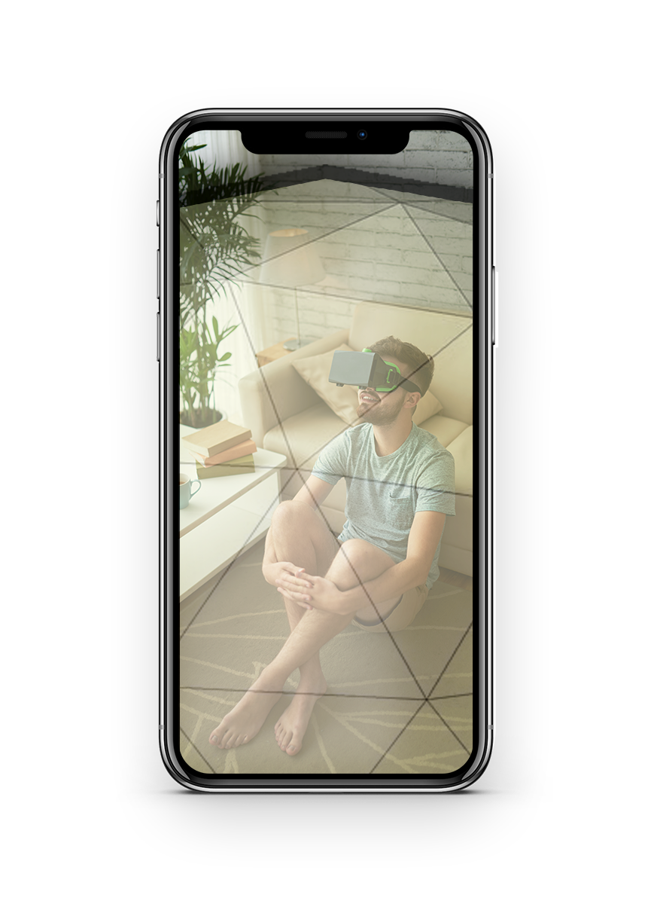

Web-enabled AR experiences
I built this project using the open-source AR.js JavaScript framework, which makes it easy to create custom augmented reality experiences for the web. With AR.js, you can build both location-based and marker-based AR applications that run directly in your browser—no app downloads or coding expertise required.
Pick your project type
Please, select a project type.